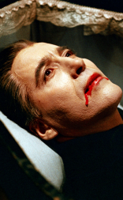
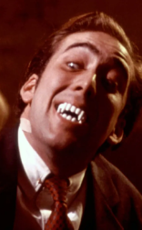
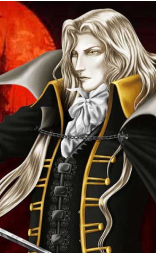
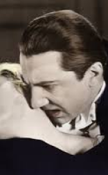

VAMPIROS
Um vampiro é uma criatura lendária encontrada em diversas tradições mitológicas e folclóricas ao redor do mundo, especialmente na Europa. Ele é geralmente descrito como um ser que se alimenta do sangue de seres vivos para manter sua vitalidade e imortalidade. Na maioria das representações, os vampiros são imortais e não envelhecem, possuindo habilidades sobre-humanas e uma sensibilidade particular à luz solar, que muitas vezes os enfraquece ou os destrói. Além disso, os vampiros podem ter a capacidade de se transformar em animais, como morcegos, ou em névoa, aumentando seu mistério e poder. Enquanto algumas lendas os retratam como monstros aterrorizantes, a imagem do vampiro também evoluiu para incluir figuras mais sedutoras e carismáticas, refletidas em várias obras de ficção, como os romances de Bram Stoker, Anne Rice e a série "Crepúsculo".
-

Dracula has risen from the grave(1968) -

Vampire's kiss(1989) -

Castlevania symphony of the night (1996) -

Dracula(1931)